Kê khai thuế nhà thầu như thế nào? Kế toán Diệu Tâm xin hướng dẫn cách kê khai thuế nhà thầu nước ngoài qua mạng trực tuyến, nhà thầu phụ nước. Thuế TNDN nộp thay nhà thầu có được đưa vào chi phí, Thuế TGTGT nhà thầu nộp thay có được khấu trừ?
Theo điều 20 Thông tư 156/2013/TT-BTC ngày 06/11/2013 và Thông tư Số 103/2014/TT-BTC ngày 06/8/2014: hướng dẫn kê khai thuế nhà thầu nước ngoài và nhà thầu phụ nước ngoài cụ thể như sau:
----------------------------------------------------------------------------
I. Nhà thầu nước ngoài, Nhà thầu phụ nước ngoài là tổ chức kinh doanh thì thực hiện nghĩa vụ nộp thuế giá trị gia tăng (GTGT) và thuế thu nhập doanh nghiệp (TNDN), cụ thể như sau:
a. Nếu nộp thuế GTGT theo phương pháp khấu trừ, nộp thuế TNDN trên cơ sở kê khai doanh thu, chi phí để xác định thu nhập chịu thuế TNDN: (gọi tắt là phương pháp kê khai)
- Đối tượng và điều kiện áp dụng:
- Có cơ sở thường trú tại Việt Nam, hoặc là đối tượng cư trú tại Việt Nam;
- Thời hạn kinh doanh tại Việt Nam theo hợp đồng nhà thầu, hợp đồng nhà thầu phụ từ 183 ngày trở lên kể từ ngày hợp đồng nhà thầu, hợp đồng nhà thầu phụ có hiệu lực;
- Áp dụng chế độ kế toán Việt Nam và thực hiện đăng ký thuế, được cơ quan thuế cấp mã số thuế.
- Khi ký hợp đồng với nhà thầu thì phải thông báo bằng văn bản với cơ quan thuế về việc nộp thuế GTGT, TDNN trong phạm vi 20 (hai mươi) ngày kể từ khi ký hợp đồng.
- Khi cơ quan thuế cấp Giấy chứng nhận đăng ký thuế cho Nhà thầu thì phải gửi 01 bản chụp (có xác nhân) cho bên Việt Nam hoặc Nhà thầu nước ngoài.
Kết luận:
- Trường hợp này các bạn kê khai thuế GTGT theo pp khấu trừ và thuế TNDN như 1 doanh nghiệp bình thường tại VN.
--------------------------------------------------------------------------------
- Đối tượng và điều kiện áp dụng:
- Những nhà thầu không đáp ứng được 1 trong các điều kiện nêu trên (ý “a”) thì Bên Việt Nam nộp thay thuế cho Nhà thầu nước ngoài, Nhà thầu phụ nước ngoài.
Cách tính xem tại đây: Cách tính thuế nhà thầu nước ngoài
- Trường hợp này các bạn kê khai theo lần phát sinh thanh toán tiền cho nhà thầu nước ngoài và khai quyết toán khi kết thúc hợp đồng nhà thầu.
- Nếu bên Việt Nam thanh toán cho Nhà thầu nước ngoài nhiều lần trong tháng thì có thể đăng ký khai thuế theo tháng thay cho việc khai theo từng lần phát sinh.
- Tờ khai thuế theo mẫu số 01/NTNN ban hành kèm theo Thông tư 103/2014/TT-BTC.
- Bản chụp hợp đồng nhà thầu, hợp đồng nhà thầu phụ có xác nhận của người nộp thuế (đối với lần khai thuế đầu tiên của hợp đồng nhà thầu);
- Bản chụp giấy phép kinh doanh hoặc giấy phép hành nghề có xác nhận của người nộp thuế.
- Đối với hợp đồng nhà thầu là hợp đồng xây dựng, lắp đặt thì nộp hồ sơ khai thuế, hồ sơ khai quyết toán thuế cho Cục thuế hoặc Chi cục Thuế do Cục trưởng Cục Thuế địa phương nơi diễn ra hoạt động xây dựng, lắp đặt quy định.
Lưu ý: Bên Việt Nam có trách nhiệm đăng ký thuế với cơ quan thuế quản lý trực tiếp để thực hiện nộp thay thuế cho Nhà thầu nước ngoài, Nhà thầu phụ nước ngoài trong phạm vi 20 (hai mươi) ngày làm việc kể từ khi ký hợp đồng.
--------------------------------------------------------------------------
- Đối tượng và điều kiện áp dụng:
- Có cơ sở thường trú tại Việt Nam, hoặc là đối tượng cư trú tại Việt Nam;
- Thời hạn kinh doanh tại Việt Nam theo hợp đồng nhà thầu, hợp đồng nhà thầu phụ từ 183 ngày trở lên kể từ ngày hợp đồng nhà thầu, hợp đồng nhà thầu phụ có hiệu lực;
- Tổ chức hạch toán kế toán theo quy định của pháp luật về kế toán và hướng dẫn của Bộ Tài chính.
=> Thì đăng ký với cơ quan thuế để thực hiện nộp thuế GTGT theo phương pháp khấu trừ và nộp thuế TNDN theo tỷ lệ % tính trên doanh thu tính thuế.
Kết luận:
- Thuế GTGT: Các bạn kê khai theo phương pháp khấu trừ như 1 doanh nghiệp của VN.
- Thuế TNDN: Các bạn tính thuế TNDN như trường hợp “b” bên trên (Chỉ phần thuế TNDN thôi nhé), chi tiết thì các bạn click vào chữ: Cách tính thuế nhà thầu nước ngoài bên trên nhé.
Lưu ý: Phải thông báo bằng văn bản với cơ qua thuế trong phạm vi 20 từ khi ký hợp đồng nhé.
Hồ sơ khai thuế nhà thầu nước ngoài gồm:
- Tờ khai thuế theo mẫu số 03/NTNN ban hành kèm theo Thông tư 156;
- Bản chụp hợp đồng nhà thầu, hợp đồng nhà thầu phụ có xác nhận của người nộp thuế (đối với lần khai thuế đầu tiên của hợp đồng nhà thầu);
- Bản chụp giấy phép kinh doanh hoặc giấy phép hành nghề có xác nhận của người nộp thuế.
--------------------------------------------------------------------------------------------------
II. Nếu Nhà thầu nước ngoài, Nhà thầu phụ nước ngoài là cá nhân nước ngoài kinh doanh thực hiện nghĩa vụ thuế GTGT và thuế thu nhập cá nhân, cụ thể như sau:- Thuế GTGT:
| Số thuế GTGT phải nộp | = | Doanh thu tính thuế Giá trị gia tăng | X | Tỷ lệ % để tính thuế GTGT trên doanh thu |
Chi tiết các bạn: Click vào chữ: Cách tính thuế nhà thầu nước ngoài (ở ý “b” ben trên nhé)
__________________________________________________
III. Cách kê khai thuế nhà thầu qua mạng trực tuyến:
Theo công văn 1249/TCT –CNTT ngày 4/4/2017 của Tổng cục thuế hướng dẫn kê khai thuê nhà thầu nước ngoài trực tuyến qua mạng:
1. DN bên VN có trách nhiệm phải đăng ký MST nhà thầu:
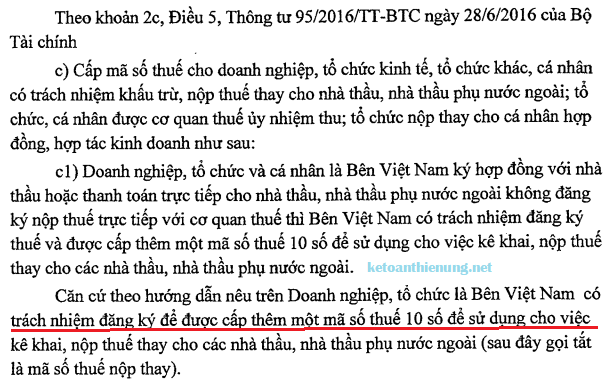
Theo quy định tại điểm c khoản 3 Điều 5 Thông tư 95/2016/TT-BTC, trường hợp Công ty khi ký hợp đồng hoặc thanh toán cho Nhà thầu chính và Nhà thầu phụ nước ngoài thuộc đối tượng không đăng ký thuế tại Việt Nam thì phải xin cấp MST 10 số để khai nộp thay thuế nhà thầu.
Tuy nhiên, không bắt buộc phải xin cấp MST nộp thay cho từng nhà thầu hay từng hợp đồng. Thay vào đó, có thể sử dụng chung 01 MST để khai nộp thay cho tất cả các nhà thầu chính và nhà thầu phụ nước ngoài.
Trường hợp Công ty có ký kết các hợp đồng mới với các nhà thầu, nhà thầu phụ nước ngoài thì làm thủ tục đăng ký bổ sung thông tin đăng ký thuế của các nhà thầu theo Bảng kê mẫu 04.1-ĐK-TCT-BTC ban hành kèm Thông tư 95/2016/TT-BTC. Thời hạn đăng ký bổ sung trong vòng 10 ngày làm việc kể từ ngày ký hợp đồng mới (khoản 2 Điều 12 Thông tư 95/2016/TT-BTC ).
Tuy nhiên, không bắt buộc phải xin cấp MST nộp thay cho từng nhà thầu hay từng hợp đồng. Thay vào đó, có thể sử dụng chung 01 MST để khai nộp thay cho tất cả các nhà thầu chính và nhà thầu phụ nước ngoài.
Trường hợp Công ty có ký kết các hợp đồng mới với các nhà thầu, nhà thầu phụ nước ngoài thì làm thủ tục đăng ký bổ sung thông tin đăng ký thuế của các nhà thầu theo Bảng kê mẫu 04.1-ĐK-TCT-BTC ban hành kèm Thông tư 95/2016/TT-BTC. Thời hạn đăng ký bổ sung trong vòng 10 ngày làm việc kể từ ngày ký hợp đồng mới (khoản 2 Điều 12 Thông tư 95/2016/TT-BTC ).
(Công văn 8201/CT-TTHT ngày 24/8/2017 của Cục Thuế TP. HCM)
---------------------------------------------------------------------------------------------------------
2. Cách Kê khai thuế nhà thầu 01/NTNN qua mạng:
Ví dụ:
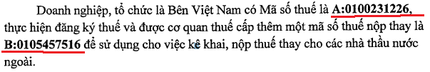
Có 2 cách để kê khai thuế nhà thầu qua mạng là:
- Kê khai trực tuyến trên website: nhantokhai
- Hoặc lập tờ khai trên phần mềm HTKK rồi nộp qua mạng
------------------------------------------------------------------------------------------------
CÁCH 1: Kê khai trực tuyến trên website: Nhantokhai bằng ứng dụng iHTKK
Bước 1: - Doanh nghiệp, tổ chức bên Việt Nam đăng nhập vào Tài khoản trên: nhantokhai.gdt.gov.vn, bằng Mã số thuế A: 0100231226 (MST Doanh nghiệp)
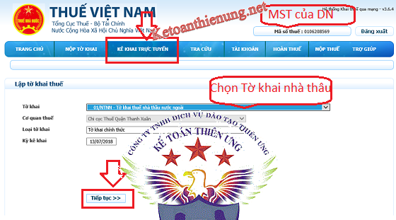
Bước 2:
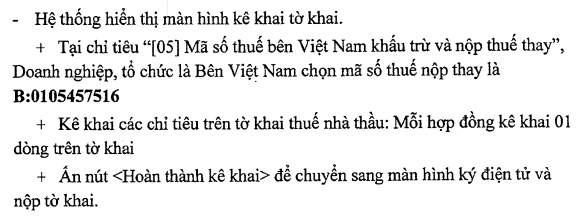
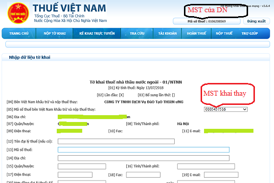
Bước 3: - Tiếp đó Chi tiết về việc kê khai các chỉ tiêu trên Tờ khai các bạn có thể xem tại đây nhé:
Bước 4: - Sau khi kê khai xong các bạn ấn nút "Ký và nộp tờ khai"
Chú ý: Khi ký điện tử thì chọn "Ký điện tử bằng chứng thư số của mã số thuế A: 0100231226 (MST Doanh nghiệp)
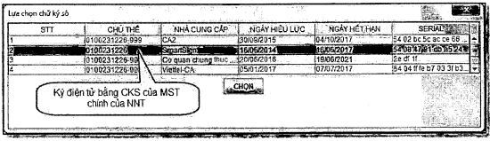
Như vậy là kê khai xong theo cách kê khai trực tuyến trên nhantokhai nhé
- Cách viết giấy nộp tiền thuế nhà thầu, các bạn xem tiếp phần bên dưới nhé
-------------------------------------------------------------------------
CÁCH 2: Kê khai trên phần mềm HTKK -> sau đó kết xuất XML -> Nộp qua mạng.
Bước 1: Đăng nhập bằng MST B: 0105457516 (MST khai thay)
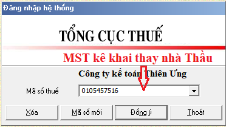
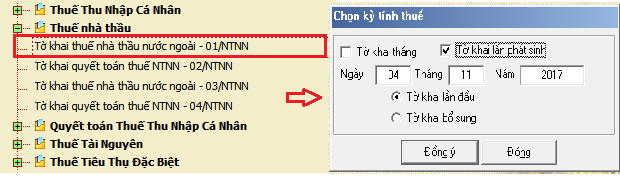
Bước 2: - Nhập các chỉ tiêu vào Tờ khai thuế Nhà Thầu:
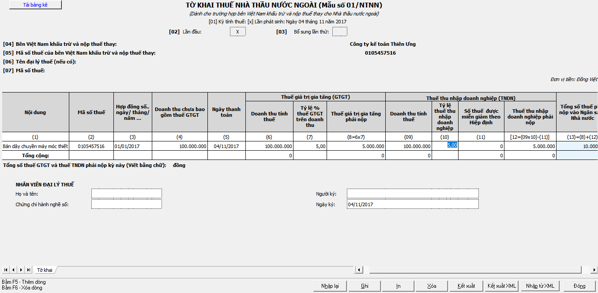
Chú ý: Mỗi hợp đồng kê khai 1 dòng trên tờ khai.
Chi tiết về việc kê khai các chỉ tiêu trên Tờ khai các bạn có thể xem tại đây nhé:
Bước 3: -> Sau khi đã hoàn thành kê khai -> Các bạn bấm "Kết xuất XML" -> Chọn nơi lưu File.
Bước 4: -> Tiếp đó các bạn truy cập vào web: nhantokhai.gdt.gov.vn
CHÚ Ý: Các bạn phải đăng nhập băng MST A: 0100231226 (MST Doanh Nghiệp) -> Các nộp tờ khai bình thường như Tờ khai thuế GTGT thôi nhé.
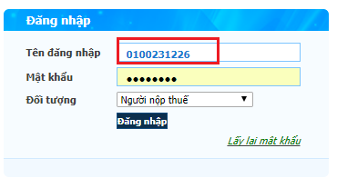
- > Đến phần "Ký điện tử" các bạn chọn chứng thư số của DN m nhé: MST A: 0100231226
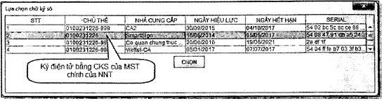
Như vậy là các bạn đã nộp xong rồi nhé
------------------------------------------------------------------------------------------
Cách viết giấy nộp tiền thuế nhà thầu:
Chú ý: Nộp xong Tờ khai thuế nhà thầu thì các bạn phải nộp tiền thuế nhà thầu nhé
-> xem thêm: Cách ghi giấy nộp tiền thuế nhà thầu
-----------------------------------------------
Thuế GTGT nộp thay nhà thầu có được khấu trừ? Thuế TNDN nhà thầu nộp thay có được đưa vào chi phí được trừ khi tính thuế TNDN?
Theo Công văn 3303/CT-TTHT ngày 22/1/2018 của Cục thuế TP. Hà Nội
"Công ty được khấu trừ số thuế GTGT nộp hộ nhà thầu nước ngoài theo quy định tại Khoản 10 Điều 1 Thông tư số 26/2015/TT-BTC. Công ty tổng hợp số thuế GTGT nộp hộ nhà thầu nước ngoài được khấu trừ vào chỉ tiêu [24] trên tờ khai GTGT mẫu 01/GTGT.
Trường hợp theo thỏa thuận tại hợp đồng nhà thầu, doanh thu nhà thầu nước ngoài nhận được không bao gồm thuế TNDN thì khoản thuế TNDN Công ty nộp hộ nhà thầu nước ngoài được trừ khi xác định thu nhập chịu thuế TNDN nếu đáp ứng điều kiện quy định tại Điều 4 Thông tư số 96/2015/TT-BTC .
Cục thuế TP Hà Nội trả lời để Công ty được biết và thực hiện./."
--------------------------------------------------------------------------------------------
Kế toán Diệu Tâm chúc các bạn thành công!